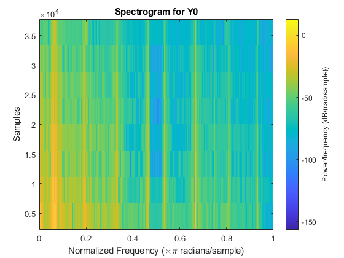
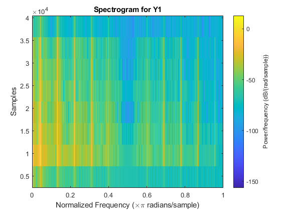
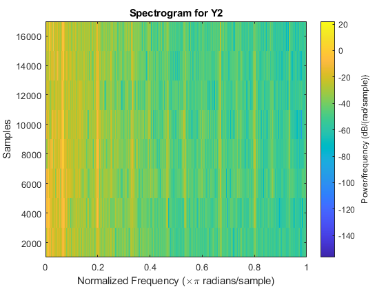
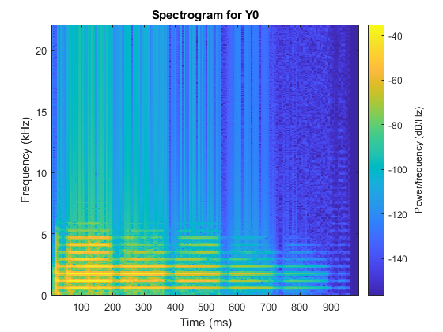
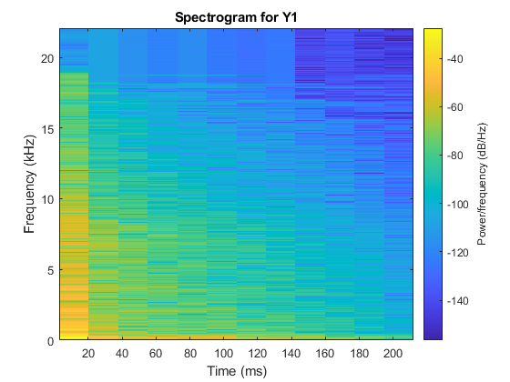
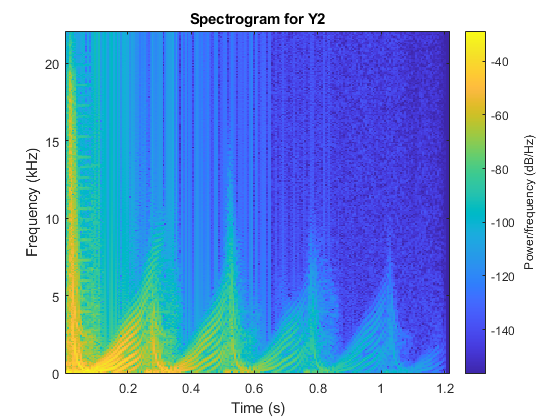
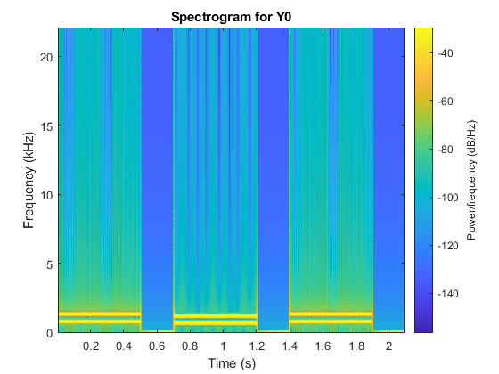
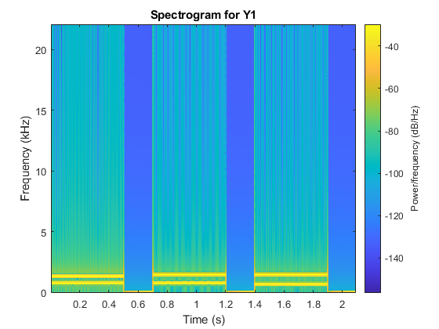
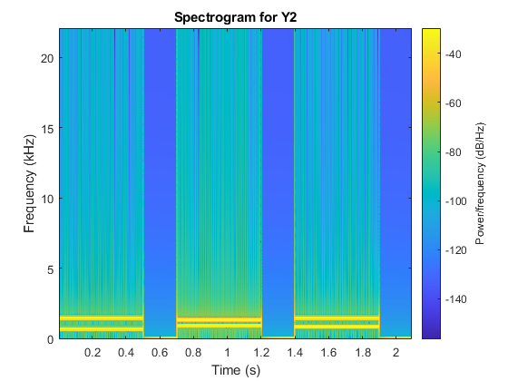

List of Audio Libraries and References
The following list of C / C++ libraries and references for audio processing is provided for your convenience only.
You are not required to use any of these libraries / references for this homework.
-
Keep It Simple, Stupid FFT library.
-
Audacity. Useful for analyzing raw audio (waves) and modifying audio files (ie. stereo <--> mono).
Part 1a: Slow DFT
Implement the Discrete Fourier Transform (DFT) in C, C++, MATLAB, Java, or Python. Implement the slow version that multiplies the transform matrix by the input vector in O(N2) time. Your code should support input vectors of size up to 1024.
import math
# Implementation of Slow O(size^2) DFT. Takes two input vectors. First takes in the
# real part of the vector element and the second takes the imaginary part. Similarly,
# after computation, the real and imaginary parts are returned in a 2D array (element 0 of
# 2D array is real and element 1 of 2D array is imaginary).
def slow_dft(input_vector_real, input_vector_imaginary):
size = 0
if len(input_vector_real) == len(input_vector_imaginary):
size = len(input_vector_real)
else:
return "Real and Imaginary parts are not the same size."
output_real = []
output_imaginary = []
for n in range(size):
sum_real = 0
sum_imaginary = 0
for k in range(size):
angle = (2 * math.pi * k * n) / size
sum_real = sum_real + (input_vector_real[k] * math.cos(angle)) + (
input_vector_imaginary[k] * math.sin(angle))
sum_imaginary = sum_imaginary + (input_vector_imaginary[k] * math.cos(angle)) - (
input_vector_real[k] * math.sin(angle))
output_real.append(round(sum_real, 5))
output_imaginary.append(round(sum_imaginary, 5))
return output_real, output_imaginary
Part 1b: Slow IDFT
Implement the Inverse Discrete Fourier Transform (IDFT) in C, C++, MATLAB, Java, or Python. Implement the slow version that multiplies the transform matrix by the input vector in O(N2) time. Your code should support input vectors of size up to 1024.
import math
# Implementation of Slow O(size^2) IDFT. Takes two input vectors. First takes in the
# real part of the vector element and the second takes the imaginary part. Similarly,
# after computation, the real and imaginary parts are returned in a 2D array (element 0 of
# 2D array is real and element 1 of 2D array is imaginary).
def slow_idft(input_vector_real, input_vector_imaginary):
size = 0
if len(input_vector_real) == len(input_vector_imaginary):
size = len(input_vector_real)
else:
return "Real and Imaginary parts are not the same size."
output_real = []
output_imaginary = []
for n in range(size):
sum_real = 0
sum_imaginary = 0
for k in range(size):
angle = (2 * math.pi * k * n) / size
sum_real = sum_real + (input_vector_real[k] * math.cos(angle)) - (
input_vector_imaginary[k] * math.sin(angle))
sum_imaginary = sum_imaginary + (input_vector_real[k] * math.sin(angle)) + (
input_vector_imaginary[k] * math.cos(angle))
output_real.append(round(sum_real / size, 5))
output_imaginary.append(round(sum_imaginary / size, 5))
return output_real, output_imaginary
Part 2a: FFT
Implement the Fast Fourier Transform (FFT) in C, C++, MATLAB, Java, or Python. Implement the fast version that uses recursion and runs in O(n log2 n) time. Note that you are not allowed to use MATLAB's implementation nor any other existing library for this problem. Your code should support input vectors of size up to 1024. Use your code from Part 1a to cross-check your implementation.
import cmath
# Implementation of Fast O(nlog(n)) FFT. Uses divide-and-conquer approach.
# Figured cmath is a better library to use here, so I don't have to separate
# real and imaginary parts in calculation.
def fft(input_vector):
size = len(input_vector)
# Base case
if size == 1:
return input_vector
# Perform D&C and loop through on each subsequent return
# applying exponential calculation.
else:
# Initialize output vector
output_vector = []
for i in range(size):
output_vector.append(-1)
# log(n) from recursion tree generation. Split input vector into
# even and odd element sub-parts.
even = fft(input_vector[0::2])
odd = fft(input_vector[1::2])
# n from loop traversal
for k in range(round(size / 2)):
q = cmath.exp(-2j * cmath.pi * k / size) * odd[k]
temp_0 = even[k] + q
temp_0_real = round(temp_0.real, 4)
temp_0_imag = round(temp_0.imag, 4)
output_vector[k] = temp_0_real + (temp_0_imag * 1j)
temp_1 = even[k] - q
temp_1_real = round(temp_1.real, 4)
temp_1_imag = round(temp_1.imag, 4)
output_vector[k + round(size / 2)] = temp_1_real + (temp_1_imag * 1j)
return output_vector
Part 2b: IFFT
Implement the Inverse Fast Fourier Transform (IFFT) in C, C++, MATLAB, Java, or Python. Implement the fast version that uses recursion and runs in O(n log2 n) time. Note that you are not allowed to use MATLAB's implementation nor any other existing library for this problem. Your code should support input vectors of size up to 1024. Use your code from Part 1b to cross-check your implementation.
import cmath
# Implementation of Fast O(nlog(n)) IFFT. Uses divide-and-conquer approach.
# Figured cmath is a better library to use here, so I don't have to separate
# real and imaginary parts in calculation.
def ifft(input_vector):
size = len(input_vector)
# Base case
if size == 1:
return input_vector
# Perform D&C and loop through on each subsequent return
# applying exponential calculation.
else:
# Initialize output vector
output_vector = []
for i in range(size):
output_vector.append(-1)
# O(log(n)) from recursion tree generation. Split input vector into
# even and odd element sub-parts.
even = ifft(input_vector[0::2])
odd = ifft(input_vector[1::2])
# O(n) from loop traversal
for k in range(round(size / 2)):
q = cmath.exp(2j * cmath.pi * k / size) * odd[k]
temp_0 = (even[k] + q)
temp_0_real = round(temp_0.real, 4)
temp_0_imag = round(temp_0.imag, 4)
output_vector[k] = temp_0_real + (temp_0_imag * 1j)
temp_1 = (even[k] - q)
temp_1_real = round(temp_1.real, 4)
temp_1_imag = round(temp_1.imag, 4)
output_vector[k + round(size / 2)] = temp_1_real + (temp_1_imag * 1j)
return output_vector
# Final scaling helper function for IFFT. This was needed as
# dividing by size as required by the IDFT base algorithm at every level
# in the recursion tree resulted in improper scaling. Therefore, we do it instead
# at the very end stage, which means we need to call this function seperately once
# we exit the main ifft function. Still, big-o is not violated (iirc) as we still have
# O(nlog(n)) + O(n) = O(nlog(n))
def scaling_ifft(vector, size):
output_vector = []
for i in range(size):
output_vector.append(vector[i] / size)
return output_vector
Part 3a: FFT check
Using your implementation from Part 2a, compute the Discrete Fourier Transform of the following vector:
[0, 0.7071, 1, 0.7071, 0, -0.7071, -1, -0.7071]
Note: you may want to use sqrt(2)/2 instead of 0.7071.
[0j, -4j, 0j, 0j, 0j, 0j, 0j, 4j]
Compare your output with the output generated by MATLAB's fft() method for the same vector 'x'. Include the result below, and point out any discrepancies. You may also use one of the FFT libraries above, if you choose.
My Implementation: [0j, -4j, 0j, 0j, 0j, 0j, 0j, 4j] MATLAB: 0.0000 + 0.0000i 0.0000 - 4.0000i 0.0000 + 0.0000i 0.0000 + 0.0000i 0.0000 + 0.0000i 0.0000 - 0.0000i 0.0000 + 0.0000i 0.0000 + 4.0000i No discrepancies exist. My implementation and MATLAB's match as expected (except representation/formatting).
Part 3b: IFFT check
Using your implementation from Part 2b, compute the inverse Discrete Fourier Transform of the following vector:
[0, -4i, 0, 0, 0, 0, 0, 4i]
[0j, (0.7071125+0j), (1+0j), (0.7071125+0j), 0j, (-0.7071125+0j), (-1+0j), (-0.7071125+0j)]
Compare your output with the output generated by MATLAB's ifft() method for the same vector 'X'. Include the result below, and point out any discrepancies. You may also use one of the IFFT libraries above, if you choose.
My Implementation: [0j, (0.7071125+0j), (1+0j), (0.7071125+0j), 0j, (-0.7071125+0j), (-1+0j), (-0.7071125+0j)] MATLAB: 0 0.7071 1.0000 0.7071 0 -0.7071 -1.0000 -0.7071 My implementation and MATLAB's match as expected. They differ in rounding and representation (as I was using the cmath library in python). One thing to note is that I had to use a scaling helper function at the end of doing the entire ifft computation as scaling based on the base dft equation in fft made it happen at every stage in the recursion tree -- giving an inaccurate result. So basically, instead, I run ifft() on my vector, and then feed the output of that into the scaling_ifft() function. This gives us an upper-bound of O(nlog(n)) + O(n) = O(nlog(n)) so we should be still good.
Part 4
Using any FFT and IFFT implementation, compute and plot the spectrograms for the following 3 audio files. In case you are curious, these audio snippets came from a video game.
| Audio Data | Spectrogram |
|---|---|
|  | |
|  | |
|  |
% Using MATLAB implementation with spectrogram function.
% Read WAV file
[Y0,fs0]=audioread('../input/Part_4/ball_bounce_brick_mono.wav');
[Y1,fs1]=audioread('../input/Part_4/ball_bounce_paddle_mono.wav');
[Y2,fs2]=audioread('../input/Part_4/paddle_widening_mono.wav');
figure; spectrogram(Y0);
title('Spectrogram for Y0');
figure; spectrogram(Y1);
title('Spectrogram for Y1');
figure; spectrogram(Y2);
title('Spectrogram for Y2');
% store the spectrogram data in the complex matrix S
S0 = spectrogram(Y0, 512, 256, 512, fs0, 'yaxis');
S1 = spectrogram(Y1, 512, 256, 512, fs1, 'yaxis');
S2 = spectrogram(Y2, 512, 256, 512, fs2, 'yaxis');
% play it
%sound(Y0, fs0)
%sound(Y1, fs1)
%sound(Y2, fs2)
Part 5
Repeat what you did in part 4, but now process three audio files that you recorded while playing your favorite game. Describe how you recorded the audio and what parameters were used (e.g., sampling frequency, duration). Also, describe the parameters that you used to compute the spectrograms (you can put this in the comments for your code). Modify the HTML template so that you files are linked and your spectrograms are show to the right of each audio file.
| Audio Data | Spectrogram |
|---|---|
|  | |
|  | |
|  |
% Recorded from Team Fortress 2 game using OBS. Converted stereo audio to
% mono audio using audacity.
% Read WAV file
[Y0,fs0]=audioread('../input/Part_5/classic_tf2_sound.wav');
[Y1,fs1]=audioread('../input/Part_5/gloves_tf2.wav');
[Y2,fs2]=audioread('../input/Part_5/hit_tf2.wav');
% All values were used based on how they represented frequency components
% for each time stamp (i.e., they were picked so that discrete cutoffs
% could be shown for the frequency components). For Y1, I had to increase
% both the window size and FFT size to better meet this criteria.
% Y0 - audio data samples
% 512 - window size (in samples)
% 256 - overlap (in samples)
% 512 - FFT size (in samples)
% fs0 - sampling frequency (in Hz)
% 'yaxis' - put the frequencies along the y axis
figure; spectrogram(Y0, 512, 256, 512, fs0, 'yaxis');
title('Spectrogram for Y0');
% Y1 - audio data samples
% 1024 - window size (in samples)
% 256 - overlap (in samples)
% 1024 - FFT size (in samples)
% fs1 - sampling frequency (in Hz)
% 'yaxis' - put the frequencies along the y axis
figure; spectrogram(Y1, 1024, 256, 1024, fs1, 'yaxis');
title('Spectrogram for Y1');
% Y2 - audio data samples
% 512 - window size (in samples)
% 256 - overlap (in samples)
% 512 - FFT size (in samples)
% fs2 - sampling frequency (in Hz)
% 'yaxis' - put the frequencies along the y axis
figure; spectrogram(Y2, 512, 256, 512, fs2, 'yaxis');
title('Spectrogram for Y2');
% store the spectrogram data in the complex matrix S
S0 = spectrogram(Y0, 512, 256, 512, fs0, 'yaxis');
S1 = spectrogram(Y1, 512, 256, 512, fs1, 'yaxis');
S2 = spectrogram(Y2, 512, 256, 512, fs2, 'yaxis');
% play it
%sound(Y0, fs0)
%sound(Y1, fs1)
%sound(Y2, fs2)
Part 6
Synthesize the dial tones for three different area codes (only the first 3 digits of a phone number). Save these as audio files and link to them in the HTML template. Then plot the spectrograms for each audio file. See the examples posted here.
| Audio Data | Spectrogram |
|---|---|
|  | |
|  | |
|  |
fs = 44100; % sampling frequency
% Uses given class functions for dial_digit and dial_number
% dial area code 515
dialAreaCode_0 = dial_number('515', 0.5, 0.2, fs);
sound(dialAreaCode_0, fs);
audiowrite('touch-tone-515.wav', dialAreaCode_0, fs);
pause(5)
% dial area code 515
dialAreaCode_1 = dial_number('563', 0.5, 0.2, fs);
sound(dialAreaCode_1, fs);
audiowrite('touch-tone-563.wav', dialAreaCode_1, fs);
pause(5)
% dial area code 309
dialAreaCode_2 = dial_number('309', 0.5, 0.2, fs);
sound(dialAreaCode_2, fs);
audiowrite('touch-tone-309.wav', dialAreaCode_2, fs);
pause(5)
% Y0 - audio data samples
% 512 - window size (in samples)
% 256 - overlap (in samples)
% 512 - FFT size (in samples)
% fs - sampling frequency (in Hz)
% 'yaxis' - put the frequencies along the y axis
figure; spectrogram(dialAreaCode_0, 512, 256, 512, fs, 'yaxis');
title('Spectrogram for Y0');
% Y1 - audio data samples
% 512 - window size (in samples)
% 256 - overlap (in samples)
% 512 - FFT size (in samples)
% fs - sampling frequency (in Hz)
% 'yaxis' - put the frequencies along the y axis
figure; spectrogram(dialAreaCode_1, 512, 256, 512, fs, 'yaxis');
title('Spectrogram for Y1');
% Y2 - audio data samples
% 512 - window size (in samples)
% 256 - overlap (in samples)
% 512 - FFT size (in samples)
% fs - sampling frequency (in Hz)
% 'yaxis' - put the frequencies along the y axis
figure; spectrogram(dialAreaCode_2, 512, 256, 512, fs, 'yaxis');
title('Spectrogram for Y2');
% store the spectrogram data in the complex matrix S
S0 = spectrogram(dialAreaCode_0, 512, 256, 512, fs, 'yaxis');
S1 = spectrogram(dialAreaCode_1, 512, 256, 512, fs, 'yaxis');
S2 = spectrogram(dialAreaCode_2, 512, 256, 512, fs, 'yaxis');
% play it
%sound(Y0, fs0)
%sound(Y1, fs1)
%sound(Y2, fs2)
Extra Credit
Non-Recursive FFT
Implement a non-recursive version of the Fast Fourier Transform (FFT) in C, C++, MATLAB, Java, or Python. This is the iterative version of the algorithm that still runs in O(N log2N) time, but does not use recursion. Your code should support input vectors of size up to 1024. Once again, this must be your own implementation. Run you code on the vector from part 3a and report the result.
// Insert your code here
// Insert your resulting vector here